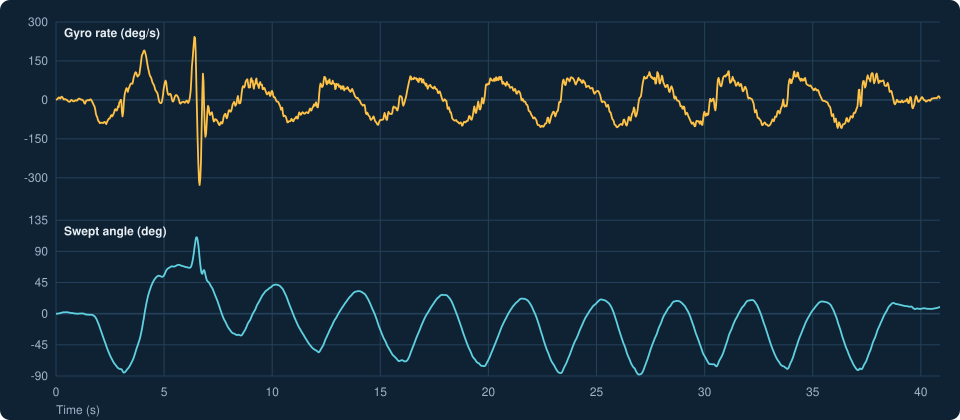

Spot
A motion-sensing pod that mounts on the end of a dumbbell and counts reps from how the weight moves.
In progress: counts dumbbell curls todayAt a glance
| Type | Personal project, started October 2026 |
|---|---|
| Board | Seeed XIAO nRF52840 Sense with an LSM6DS3 6-axis IMU (accelerometer and gyroscope) |
| Sampling | 100 Hz over I2C |
| Firmware | Arduino |
| Data tools | Python scripts that save one set per CSV file over a serial link |
| Test weight | 10 lb rubber-coated hex dumbbells |
Why I'm building it
I lose count of reps when I focus on the movement itself, which makes progress hard to measure. My fitness watch didn't solve it: a watch tracks the wrist and can't see the weight, so its counts were often wrong.
Spot mounts on the equipment instead. The goal for the first version is to count reps and time rest correctly against video, and more accurately than the watch. It will also measure how long each rep takes and flag partial reps and reps done with momentum.
How it works today
- IMUAccelerometer and gyroscope on the board, read over I2C
- Logger firmwareSamples on a fixed 100 Hz schedule and streams CSV
- Python captureSaves each set to its own named file
- Rep counterCounts reps and rejects motion that isn't a rep

Results so far
On a labeled dataset of 50 dumbbell curls across 7 recorded sets, the counter's errors dropped from 6 to 2 after I added a swept-angle check that rejects handling motion, such as picking the weight up or adjusting grip.
These numbers come from recordings I also used to tune the counter, so they show progress and are not the final score. The final score will come from sets recorded after the counter is frozen, as described below.
How it will be tested
I wrote the requirements before building the counter. Each one has a number and a way to fail.
- Video is the reference. The true rep count is what a reviewer counts on video before looking at Spot's count.
- The counter is frozen first. The code and its settings are tagged in Git, and only sets recorded after the tag are scored. If the counter changes, those sets become tuning data and new ones are recorded.
- Pass rules are written down in advance. The main ones are in the table.
| What is measured | Pass rule | Test size |
|---|---|---|
| Rep count | Within 1 rep of video on at least 90% of sets, and within 2 reps on every set | At least 27 sets per exercise: 3 speeds, 3 forms, 3 sets each |
| Motion that isn't a rep | 0 reps counted on every recording | At least 20 recordings per exercise |
| Rest time | Within 5 seconds of video on at least 90% of rest periods | At least 20 rest periods per exercise |
| Comparison with a watch | Lower mean absolute count error than a Garmin Forerunner 165 on the same sets | The rep count sets |
What's next
- Tuning recordings for the lateral raise and chest press, the other two exercises planned for version 1.
- Logging to on-board flash on battery, so a full session can be recorded with no cable.
- Flags for partial reps and momentum reps.
- The pod and its mount: a steel plate bonded to the dumbbell's end face, gripped by magnets in the pod.